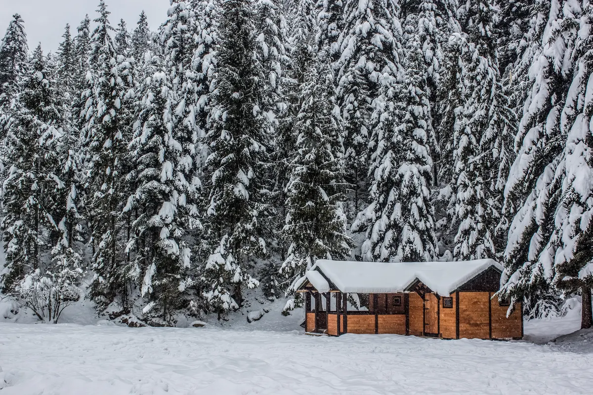

When freezing temperatures strike and your home loses power and heat, water inside your plumbing system can quickly become vulnerable. Once the lights — and warmth — return, it might be tempting to immediately turn your water back on and get things running again. But proceed carefully: doing it the wrong way could cause frozen pipes to burst, leading to leaks, flooding, and costly damage.

Here’s a simple, safe step-by-step guide on how to properly restore your water supply, and why having the experts at Angle Stop Plumbing by your side makes all the difference.
🚰 Step 1: Inspect Your Home for Signs of Frozen or Damaged Pipes
Before turning anything on, take a good look around your home — especially in unheated areas like basements, crawl spaces, and garages. Look for:
- Bulging, frosted, or cracked pipes
- Water stains or puddling around walls and floors
- Persistent dripping sounds or a running meter (even if all fixtures are off)
If you spot any of these warning signs, do not turn your water on yet. Call Angle Stop Plumbing immediately — our experienced plumbers can inspect and safely assess the situation before more damage occurs.
❄️ Step 2: Gradually Restore Warmth to Your Pipes
After an outage, pipes in cold areas can remain frozen for hours. Use gentle heat sources to warm them up gradually:
- Open cabinet doors under sinks
- Use a hair dryer or portable heater (at a safe distance) on slow, steady heat
- Increase the indoor temperature a few degrees at a time
Never use open flames or extreme heat — they can warp or damage pipes.
🔄 Step 3: Slowly Turn Your Main Water Valve Back On
Once you’re sure the pipes are thawed and there’s no visible damage, locate your main water shut-off valve — usually found near the water meter or main line entry.
Turn the valve slowly and only partway at first. Doing this allows water pressure to build up gradually, reducing the shock to your system. Check faucets and fixtures throughout your home as you go, listening for flowing water and watching for leaks.
If at any point you notice decreased flow, sputtering, or dripping — stop immediately, shut off water meter and contact Angle Stop Plumbing.
⚡ Step 4: Flush Air and Sediment from Your Plumbing System
After a power and heat outage, air and debris can become trapped inside your pipes. Run cold water taps one at a time, letting them flow until the stream runs smoothly and clear. Then, follow with the hot water taps to ensure your water heater is refilling and working properly.
Our plumbers recommend taking this opportunity to check your water heater for signs of stress or damage caused by freezing, in particular inspect seams that may have split.
🧰 Step 5: Schedule a Professional Inspection with Angle Stop Plumbing
Even if everything seems fine, it’s always a good idea to have a trusted professional evaluate your system after a deep freeze. Hidden cracks, stress fractures, or slow leaks can develop quietly and become major issues later.
At Angle Stop Plumbing, our experienced technicians will:
- Inspect your plumbing for hidden freeze damage
- Check your water heater and fixtures for safety
- Recommend winterization tips to prevent future problems
We’re available for emergency repairs and can help ensure your entire plumbing system runs safely and efficiently after power and heat loss.
💧 Peace of Mind Starts with Expert Care
Restoring your water supply after an outage doesn’t have to be stressful — but it does have to be handled carefully. Let the pros at Angle Stop Plumbing help you get your home back to normal safely and efficiently.
Whether you need emergency repairs, a full system inspection, or preventive tips for the next cold snap, we’re here for you 24/7.
👉 Call Angle Stop Plumbing today — your trusted experts for safe, reliable plumbing service when you need it most.